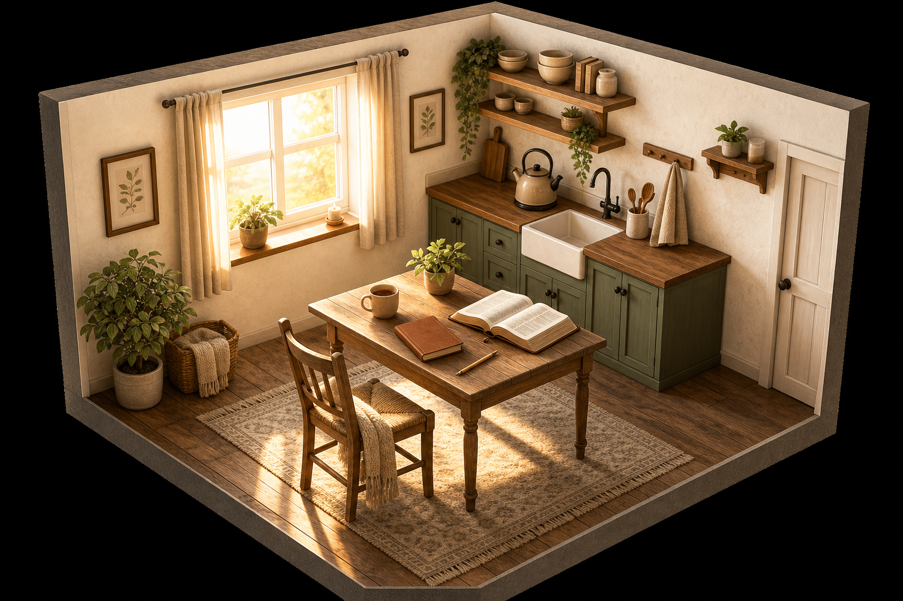
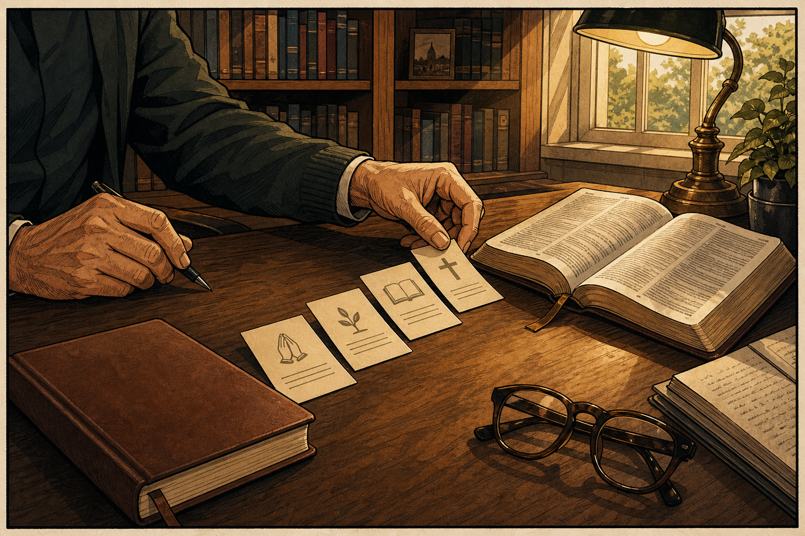

Concept 1
native-12-minute-bible-habit.png
Quiet Hour Native Ads
Concept 2
native-blank-journals-failing.png
Why Blank Bible Journals Keep Failing Faithful Readers
Concept 3
native-gentle-study-journal.png
A Gentle Study Journal Is Quietly Changing Morning Devotions
Concept 4
native-stuck-in-scripture.png
Christians Who Feel Stuck in Scripture Are Trying This Softer Approach
Concept 5
native-one-page-per-book.png
One Page Per Bible Book Is Helping Readers Finally See the Bigger Picture
Concept 6
native-grandmother-gift.png
The Small Brown Journal Many Grandmothers Are Gifting This Spring

Concept 7
native-quiet-morning-routine.png
This Quiet Morning Routine Is Bringing Scripture Back Into Daily Life

Concept 8
native-structure-not-willpower.png